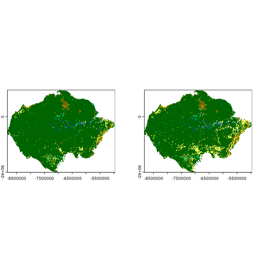
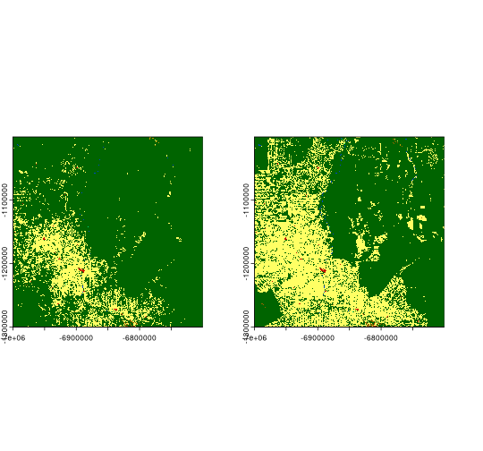
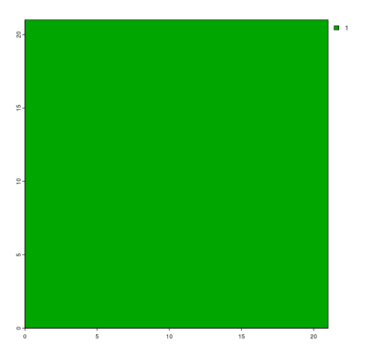
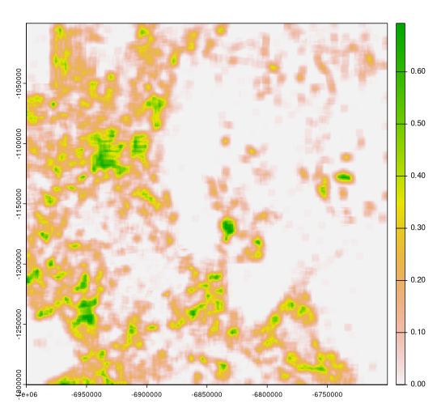
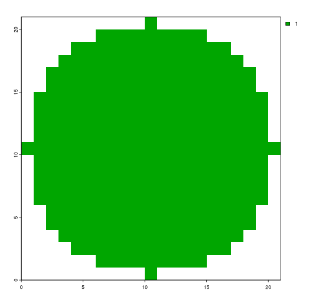
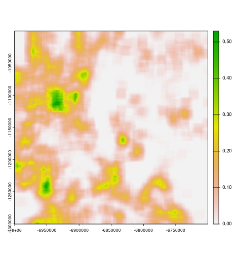
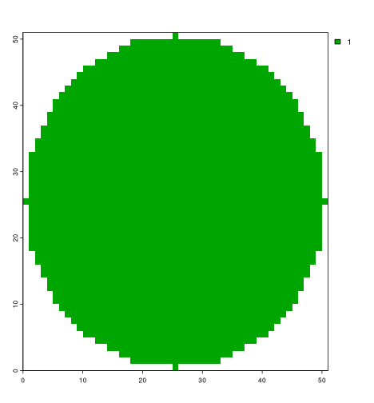

Comparing spatial patterns using moving window approach
Jakub Nowosad
2024-04-07
Introduction.RmdThe motifmw package provides a possibility to calculate the local spatial pattern signature of a raster dataset using a moving window approach. The spatial signature is a vector of numbers that describes the spatial pattern of a raster dataset, which can be used, for example, to compare the spatial patterns of two raster datasets. This vignette demonstrates how to use the motifmw together with another package called spquery to compare the spatial patterns of two land cover raster datasets using a moving window approach.
Installation
To reproduce the code in this vignette, you need to install just
three packages: motifmw, spquery, and
terra. The first two packages can be installed from
GitHub using the remotes package, while the
terra package can be installed from CRAN.
remotes::install_github("nowosad/motifmw")
remotes::install_github("nowosad/spquery")Packages and data
The motifmw approach is suitable for categorical raster datasets. Here, we will use two ESA land cover raster datasets: one from 1992 and the other from 2018. The datasets and their color tables are available from the Open Science Framework (OSF) repository.
lc92 = rast("https://osf.io/download/tjzwe/")
lc18 = rast("https://osf.io/download/wdzy6/")
coltb = read.csv("https://osf.io/download/2qd5k/")[c("value", "color")]
coltab(lc92) = coltb
coltab(lc18) = coltb
plot(c(lc92, lc18))
For the examples below, we will crop the original data to a smaller area of 1000 by 1000 cells.
lc92 = crop(lc92, ext(-7e6, -67e5, -13e5, -1e6))
lc18 = crop(lc18, ext(-7e6, -67e5, -13e5, -1e6))
plot(c(lc92, lc18))
This area was mostly covered by the forest (green color) in 1992, but in 2018, it was mostly covered by agriculture (yellow).
Local spatial pattern signature
The main function in the motifmw package is
lsp_signature_mw(), which calculates the local spatial
pattern signature (called a co-occurrence vector, cove, learn more at https://jakubnowosad.com/comat/articles/coma.html) of a
raster dataset using a moving window approach. The function requires two
arguments: x – a raster dataset, and window –
a matrix that defines the shape and size of the moving window.
Square window
Let’s start with an example using a square window of size 11 by 11
cells, which can be defined with the matrix() function.
This means that a spatial signature for each cell will be calculated
based on the 11 by 11 cells around it (5 cells in each direction).

Next, we calculate the local spatial pattern signature for both land
cover raster datasets using the lsp_signature_mw()
function. This operation may take about a minute as we need to calculate
the spatial signature in the 21 by 21 cells window for each of the
1,000,000 cells in the raster dataset.1
lc92s = motifmw::lsp_signature_mw(x = lc92, window = window)
lc18s = motifmw::lsp_signature_mw(x = lc18, window = window)The output of the lsp_signature_mw() function in this
case is a raster dataset with 28 layers, where each layer represents a
different part of the spatial signature.
Finally, we can compare the spatial patterns of the two land cover
raster datasets using the spq_compare() function from the
spquery package. This function calculates the
Jensen-Shannon divergence between the two spatial signatures, which is a
measure of the similarity between two probability distributions. The
lower the value, the more similar the spatial patterns of the two raster
datasets.2
lc_compare = spq_compare(lc92s, lc18s, dist_fun = "jensen-shannon")
plot(lc_compare)
Circle window
Although the square window is the most common choice, it is not the
best option in all cases: it uses values from the corners of the window,
which are further away from the center cell. An alternative is to use a
circular window, which can be created using the focalMat()
function from the terra package. Here, we create a
circular window with a radius of 10 cells.
window2 = focalMat(rast(window), d = 10, type = "circle", fillNA = TRUE)
window2[window2 > 0] = 1
plot(rast(window2))
The next steps are the same as before:
- we calculate the local spatial pattern signature for both land cover
raster datasets using the
lsp_signature_mw()function - we compare the spatial patterns of the two land cover raster
datasets using the
spq_compare()function
lc92s2 = lsp_signature_mw(x = lc92, window = window2)
lc18s2 = lsp_signature_mw(x = lc18, window = window2)
lc_compare2 = spq_compare(lc92s2, lc18s2, dist_fun = "jensen-shannon")
plot(lc_compare2)
The resulting map is similar to the one obtained using the square window, but some differences can be observed. We can see them better by plotting the difference between the two maps.

Summary
The motifmw package allows calculation of the local spatial pattern signature of a raster dataset using a moving window approach. It can be then used to compare changes in spatial patterns between two raster datasets, as demonstrated in this vignette. This package can also be used to extract the spatial pattern signature of a raster dataset for further analysis, such as using machine learning.
The package is experimental, and any comments and suggestions at https://github.com/Nowosad/motifmw/issues are welcome.